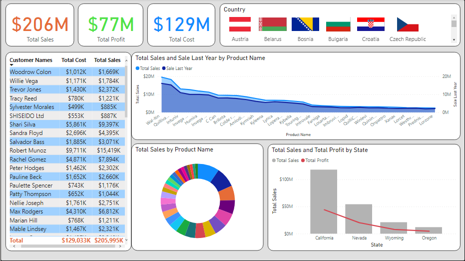
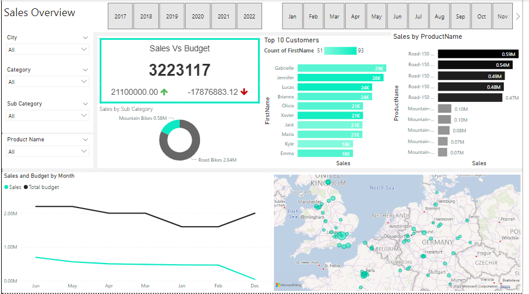

Cleaned and extracted necesaary data, worked on data modelling, created useful measures and calculated columns with DAX and developed a comprehensive, interactive and attractive 3 paged power BI report with drill through capabilities...... more

Used the dataset AdventureWorksDW2019, updated it to have data till 2022, extracted useful data and cleaned it at source using SQL. With the clean data created Sales and Customer overview with custom visuals like Dynamic KPI card, Enlightened World Flag slicer, etc...... more
Extracted Covid-19 related data, cleaned it and explored the data using MSSQL in SSMS. Explored data like Covid infected patient, deaths, vaccinated and cured metrics...... more